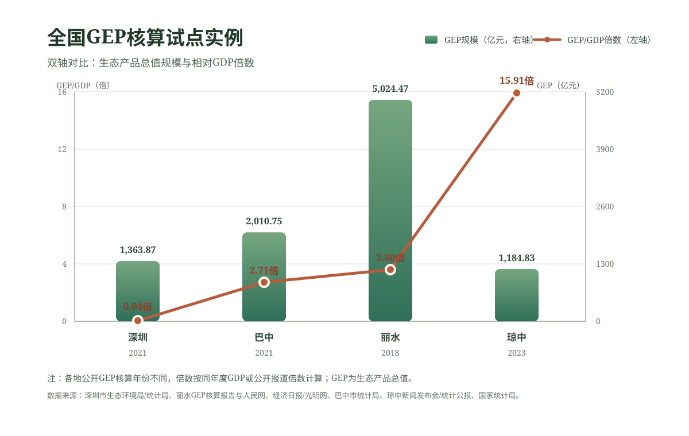

世界上的好东西分两种：一种是免费的，一种是被定价的。最讽刺的是，被定价的那些往往不是最珍贵的。空气、水、土壤、生物多样性——所有让生命成为可能的东西，在很长一段时间里都是免费的。免费的意思是：被人当成了可以无限取用的东西。而当一个东西终于开始有了价格——不管是通过交易、通过经营、通过补偿还是通过金融——人们才开始真正认真对待它。
这也许就是GEP最大的意义。它不是在给自然标价——自然不需要人类的标价。它是在给人类的无知标价。我们曾经不知道一座森林值多少钱，所以毫无顾忌地砍掉了它。现在我们终于学会了算这笔账。不是算得更精了，是算得更明白了。
生态不是没有价格。生态只有两种价格——要么是你保护的代价，要么是你失去的代价。而聪明的文明，选择在失去之前计算。
截至二〇二四年，全国已有十几个省份、上百个县市开展了GEP核算试点。丽水的GEP超过四千亿元，是其GDP的近四倍。这意味着在丽水，自然系统在一年里提供的服务价值，是人的经济活动创造价值的四倍。这不是穷在生态好——丽水不是穷，它的生态本身就值钱。它以前只是穷在没人算过这笔账。
如今，账本摊开了。生态产品价值实现的四条路径，正在从政策文本变成田间地头的真实案例——碳市场在交易，生态品牌在溢价，跨省补偿在运转，绿色贷款在流动。生态不再是搁在账本之外的一个美好愿望。它终于上了资产负债表——在它自己的那一栏里，写着：无价。但旁边多了一行小字：可核算。

数据口径：各地GEP公开核算年份不完全一致；图中“GEP/GDP倍数”按同年度公开GDP或公开报道倍数计算。数据来源： 深圳市生态环境局、 深圳市统计局、 丽水GEP核算报告、 中国经济周刊/人民网、 巴中GEP（经济日报/光明网）、 巴中市统计局、 琼中新闻发布会、 琼中县统计局； 试点概况参考经济日报/光明网与 国家统计局答复。